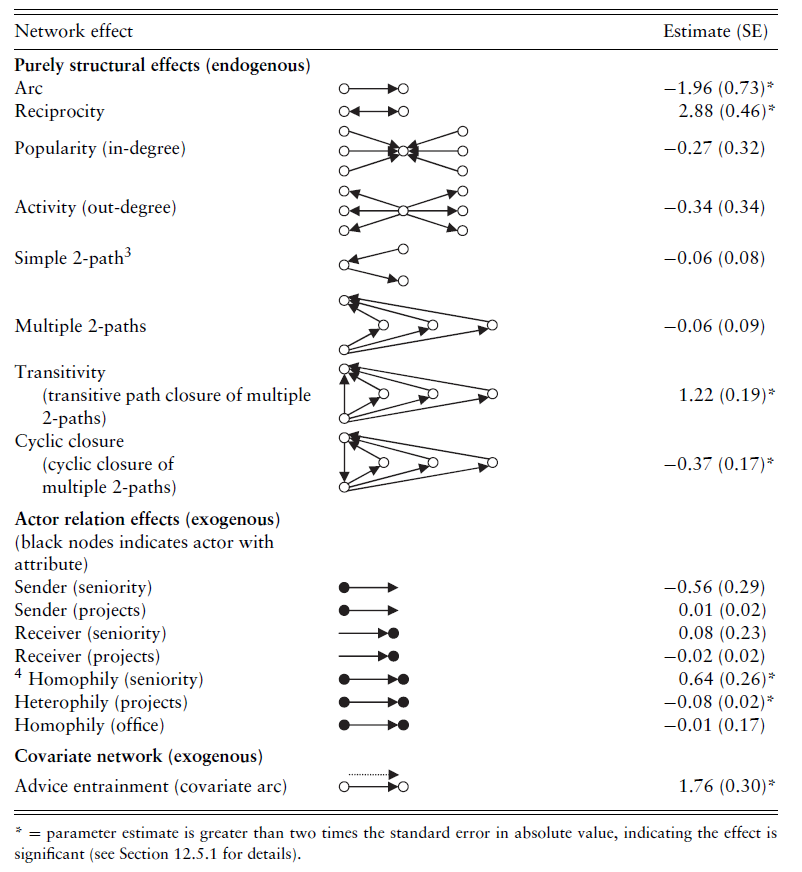

11 Modèles graphiques, modèles statistiques
11.1 Modèles graphiques
Les termes de modèle graphique ou de modélisation graphique sont peu utilisés me semble-t-il en sciences sociales en général et en analyse de réseau en particulier. Mon attachement à cette forme de modélisation, et donc la présence de cette section, est sans aucun doute due à l’influence de mon directeur de thèse, Christian Grataloup, qui dans son ouvrage (hélas épuisé et introuvable en ligne), Lieux d’histoire. Essai de géohistoire systématique proposait une série de modèles graphiques tout à fait stimulants.
Cet intérêt rejoint par ailleurs les réflexions de l’analyste de réseaux sociaux Alden Klovdahl (1981) qui écrivait notamment : “Les représentations visuelles fondées sur une théorie correcte sont généralement beaucoup plus faciles à comprendre que les données empiriques qui ont pu les inspirer et permettent donc souvent de transmettre plus clairement les principaux points théoriques. Il convient donc de garder à l’esprit que les mêmes techniques utilisées pour produire des images visuelles de données empiriques peuvent être utilisées pour produire des représentations théoriques” 1.
L’objectif de la modélisation graphique est donc la création d’un schéma illustrant un processus ou un concept susceptible d’expliquer un ou plusieurs des aspects structuraux du réseau étudié (triade interdite ou trou structural par exemple).
Un exercice d’imagination utile quand on réfléchit à ses données et à ses questions de recherche est de se poser la question suivante : que se passerait-il, et donc quelle forme aurait mon réseau, si tel processus expliquait complètement sa structure ?
Exemple 1 : je construis un réseau bimodal avec les postes de maîtresses de conférence ouverts au concours sur Galaxie (ensemble de sommets \(V_1\)) et les membres des comités de sélection (ensemble de sommets \(V_2\)) ; un lien existe quand une personne de \(V_2\) siège dans le comité de sélection du poste \(V_1\). Je peux imaginer par exemple qu’en section 23 (géographie humaine et physique), je vais obtenir deux composantes connexes, l’une créée par les postes de géographie humaine, l’autre par les postes de géographie physique et construire un petit modèle graphique. Je peux ajouter des éléments liés à ma connaissance thématique du sujet pour enrichir ce modèle théorique 2.
Exemple 2 : je m’intéresse à la place des groupes régionaux à l’Assemblée générale de l’ONU. Je peux créer un modèle où l’on passerait d’une situation totalement stato-centrée (seuls les États membres prennent la parole) à une situation centrée sur les seuls groupes puis comparer mes réseaux empiriques à ce modèle.
Le modèle graphique construit sert à imaginer un réseau “idéal” qu’on ne rencontre évidemment jamais. Comparer les données empiriques aux modèles de réseau peut permettre de trouver de nouvelles questions et d’enrichir l’analyse.

Dans sa thèse, sans jamais utiliser le terme, Briot (2021) construit à plusieurs reprises des modèles graphiques permettant d’illustrer un processus qu’elle souhaite étudier. Le fait de produire ces représentations stylisées constitue un bon moyen pour ne pas s’égarer ensuite dans le caractère touffu des données analysées.
À l’intention des formatrices
À titre personnel, je suis convaincu que l’exercice de la modélisation graphique - auquel on peut donner le nom de schématisation si on ne souhaite pas effrayer les participantes - est utile et pertinent. Construire des hypothèses à partir de ses données et traduire ces hypothèses en images de réseau ne peut que faciliter la construction d’une problématique solide et une analyse de réseau pertinente. En effet, les formes de réseau créées peuvent suggérer les mesures et méthodes pertinentes (si mon modèle est un arbre, inutile de mesurer la transitivité par exemple).
Il est possible cependant à lire les différents manuels disponibles sur le marché que je sois l’un des seuls dans ce cas. Et il n’est sans doute pas indispensable d’aborder le sujet dans une initiation à l’analyse de réseau…
11.2 Modèles statistiques
Les modélisations statistiques de réseau existent depuis plusieurs décennies et semblent occuper une place croissante dans les analyses de réseaux sociaux. Les quelques paragraphes qui suivent présentent très (trop) brièvement un de ces modèles, à savoir le modèle ERGM (Exponential Random Graph Model) ; les références bibliographiques devraient permettre aux personnes intéressées par ces méthodes de les approfondir pour les mettre en œuvre.
Le principe général d’un modèle ERGM est de comparer un réseau empirique à \(x\) réseaux aléatoires afin d’expliquer (statistiquement) la création des liens au sein du réseau étudié. Les réseaux aléatoires générés ont a minima le même nombre de sommets et de liens que le réseau étudié mais d’autres contraintes peuvent être incluses dans le modèle (graphes aléatoires respectant la distribution des degrés du réseau étudié par exemple).
D’un point de vue statistique, le modèle ERGM présente de fortes similitudes avec une régression logistique 3, la différence majeure étant que les données ne sont pas supposées indépendantes. La variable à expliquer est l’existence de liens entre deux sommets et les variables explicatives mêlent généralement propriétés structurales (densité, degré entrant et sortant, liens mutuels etc.) et variables attributaires (figure 11.1). Des tests statistiques permettent d’évaluer la significativité de chacune des variables du modèle.

Extrait du manuel de Lusher et al. (2013). La colonne de gauche liste les variables explicatives endogènes (structurales) et exogènes (attributs des sommets) utilisées, la colonne de droite leurs significativités statistiques.
Comme tout modèle de régression multiple, le choix des variables explicatives est lié à des hypothèses aussi explicites que possibles sachant que plus le nombre de variables est élevé, plus le modèle est délicat à interpréter.
Si les modèles ERGM tendent à s’imposer dans certaines disciplines, ils présentent un certain nombre de limites. La principale limite réside dans le nombre de sommets qui ne peut pas dépasser quelques centaines. Le temps de calcul peut être long et l’interprétation délicate. Comme toutes les régressions multiples, le choix des variables explicatives pèse lourdement sur les résultats : il est tout à fait possible de construire des modèles statistiquement performants (les variables sélectionnées sont toutes très significatives) et peu pertinents au niveau thématique.
Des adaptations des modèles ERGM ont été proposées pour les réseaux valués, bimodaux, temporels, personnels, etc.
D’autres formes de modélisation statistique sont également couramment employés, notamment pour la détection de communautés (Stochastic block model). Les compétences mathématiques nécessaires pour les comprendre dépassent tant mes compétences actuelles que le cadre de ce guide pratique.
11.3 Pour aller plus loin
La page workshops du projet statnet (ensemble de packages R dédiés à l’analyse de réseau) offre de nombreuses ressources régulièrement actualisées sur les différents modèles ERGM. Il est possible de les utiliser pour se former même si l’on n’utilise pas R. Le manuel de Lusher et al. (2013) date un peu, il reste néanmoins très utile pour comprendre ces modèles ; on peut le trouver en ligne sans trop de problème. Les personnes curieuses des Stochastic block model peuvent consulter en première approche l’article de Lee and Wilkinson (2019).
“Visual representations based on good theory are usually much easier to comprehend than the empirical data that may have inspired them, and hence often help to convey key theoretical points more clearly. Thus, it is worth keeping in mind that the same techniques used to produce visual images of empirical data can be used to produce theoretical representations.”↩︎
Je pourrais par exemple supposer, étant données la géographie et la démographie universitaires, que les personnes faisant office de point d’articulation sont plutôt des femmes de rang A travaillant en Île-de-France.↩︎
Forme de régression linéaire multiple où la variable à expliquer est binaire (0 absence, 1 présence).↩︎